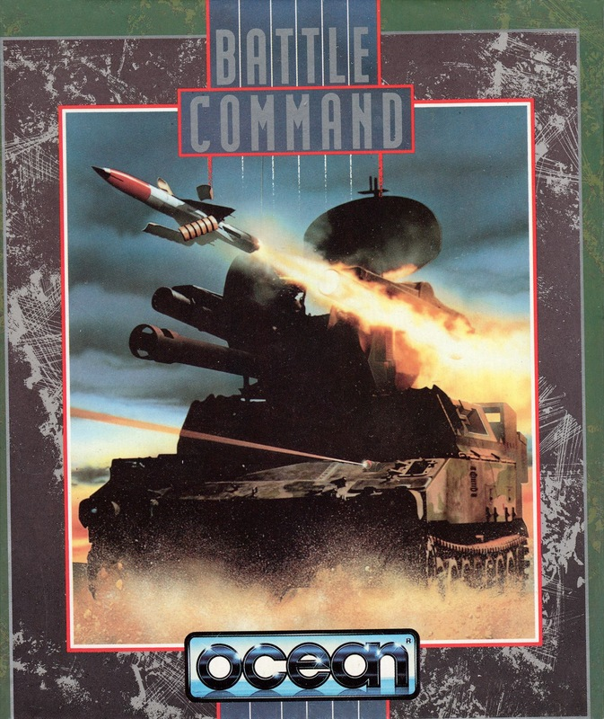
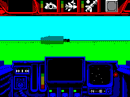

Battle Command


{kind=link}

| Publisher: | Ocean |
| Price: | £10.99 / £15.99 |
| Year: | 1991 |
| Source: | CRASH, Issue 86 |

Set in the near future on a parallel world, Battle Command takes us to a battlefield where in ten years of conflict the forces of the north and south are at a stalemate. The defensive capabilities of both sides are so great that an all-out battle would end in Armageddon, so small guerilla-style attacks are encouraged.
It’s as a brave northern warrior that you board the latest in tank technology, the impressively named Mauler. You have ten missions to attempt: Blast ‘Em, Missile Battery, Hostage Rescue, Railway Ambush, Night Moves, Grand Finale, Satellite Search, River Raid, Hideout and Escort Duty.
Each mission needs a different mixture of blasting and strategy skills. Most of the time you simply have to destroy targets, but in a couple of the missions you have to find the target first (logical).

Once a mission is selected, a brief text message identifies the target(s), while a map points you in the right direction. When the information’s been digested, you’re ready to arm up. For this there’s a range of weaponry, including a 120mm turret gun, rockets, mortars, chaff and flare launchers.
You view the hostile terrain through the tank’s viewport. Surrounding the viewport are the many dials and switches used to control the Mauler (activated by pressing various keys). There are four weapon pods, a binocular view, infra-red night scope and a radio beacon to summon a helicopter ally at the end of the mission. And the programmers, Realtime Software, are such nice people they’ve allowed you to access the mission map and text if you get lost!
The enemy are out in force in most missions and they play for keeps. Tanks are fairly easy to destroy with a well-placed shell or missile, but watch your back when up against the likes of a rocket launcher. Good luck soldier, you’ll need it.
It took Realtime around two years to program their last game, Carrier Command, and guess what? Yes, Battle Command has taken the same amount of time to appear. But was it worth the wait? The answer is a resounding ‘yes’!
The graphics are up to Realtime’s high standards, wireframe and shaded sprites blending to create good looking and very fast moving vehicles. Playability is also excellent, each of the ten missions calling for different degrees of blasting and strategy skills. Battle Command’s tough, there’s no doubt of that, but it gets a big thumbs up from me.
MARK — 95%
Spooky Coincidences number 378 (in a series of 598,374): Battle Command arrives in the office as soon as war breaks out in the Gulf. So there I was, bombing around in the Mauler on one screen, and on the TV screen next to me John Simpson is counting them all out and counting them all in. Brrrr! Sitting down to play Battle Command for the first time is a daunting experience. There seems so much to learn. But then, after a couple of plays, it all becomes like a really playable arcade game. It’s not much of a toughie simulation at all! Battle Command is best summed up as Battle Zone (that old vector graphic coin-op) with strategic missions. There’s plenty of driving around and blasting enemy tanks and gun emplacements before actually completing a mission — it’s great fun letting rip with an assortment of missiles. The variety of missions is good, and as you work your way through new tactics and approaches are learned. The speed of both the vector and solid 3D graphics is very impressive, much faster than Carrier Command, and the shading’s good so most objects can be clearly seen. Presentation is fab, with lots of easily-understood option screens, heaped with colourful graphics to go through. Yes sirree, I really enjoyed taking control of the Mauler and giving the enemy what for!
RICHARD — 93%
RATING
More of a game than a simulation, and very entertaining, to boot!
| Presentation: | 94% |
| Graphics: | 92% |
| Sound: | 80% |
| Playability: | 93% |
| Addictivity: | 90% |
| Overall: | 94% |